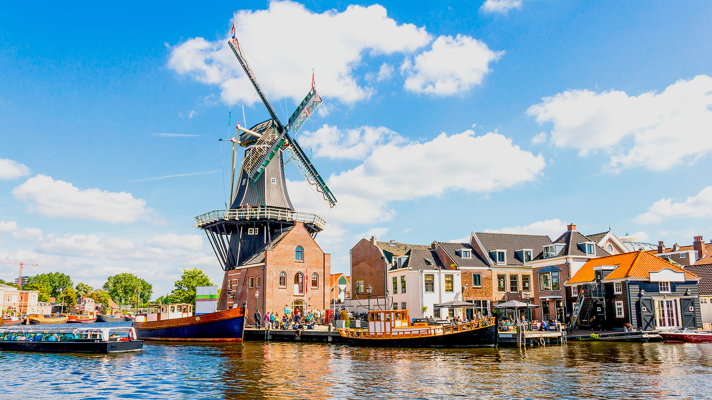
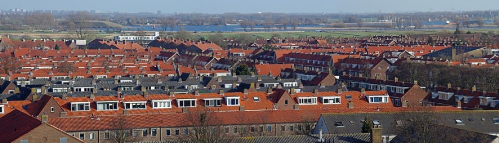
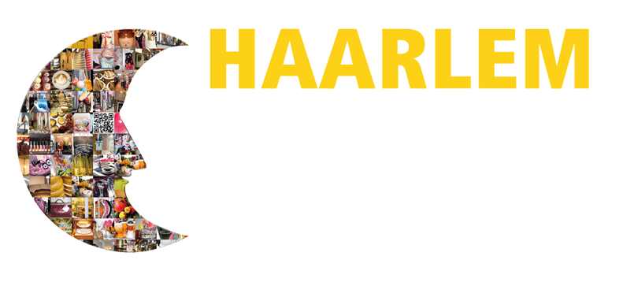
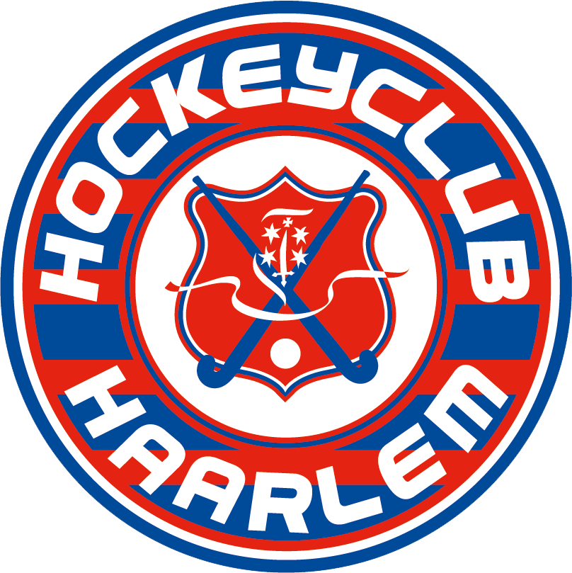
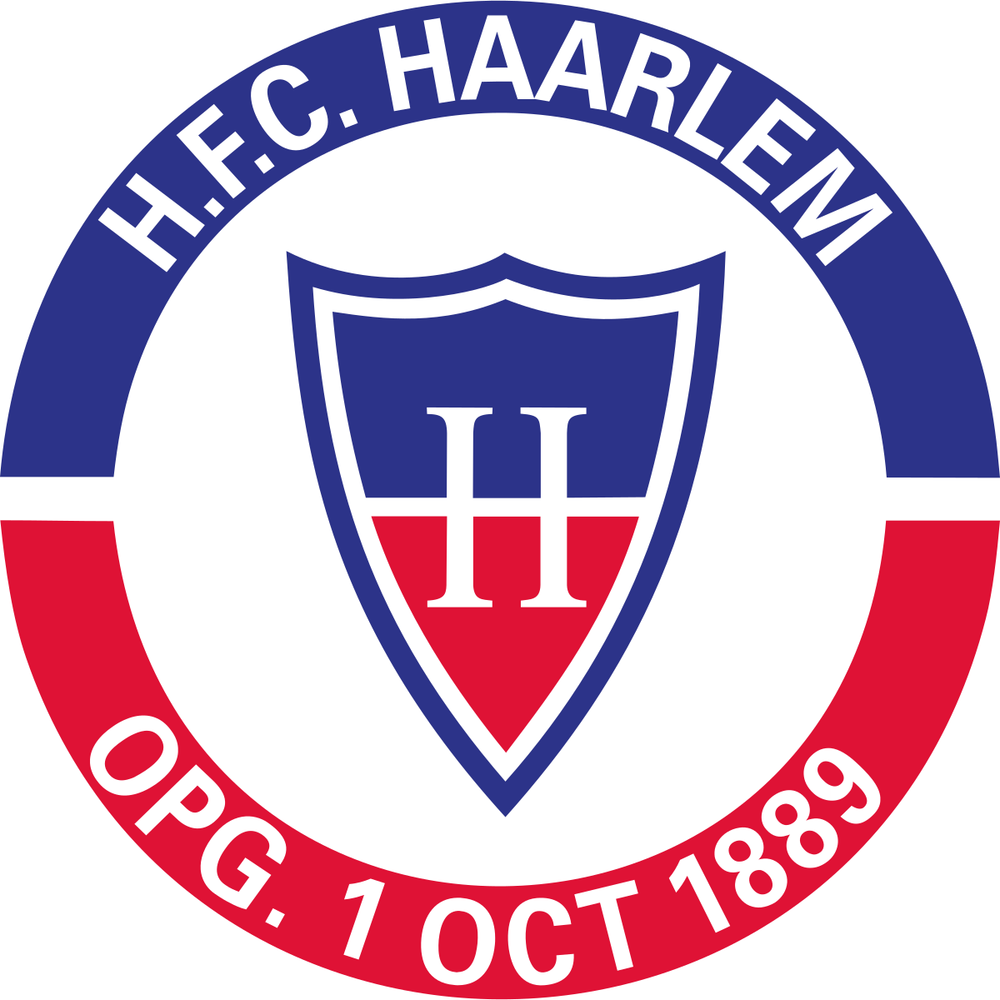
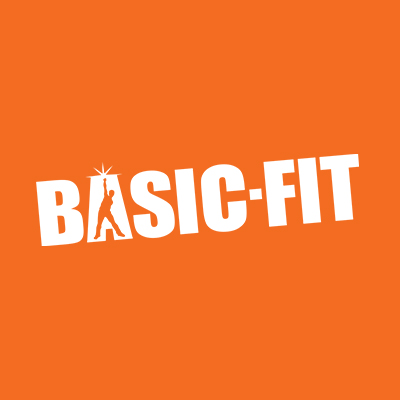
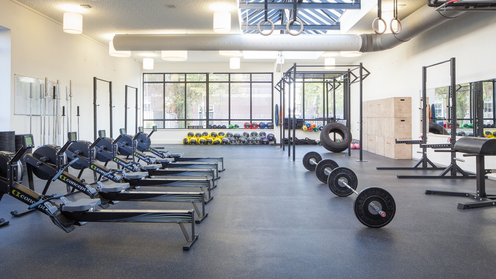
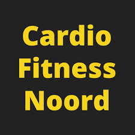

Haarlem is a city and municipality in The Netherlands and also the capital of the province of Noord Holland.
The city lies on the River Spaarne and in The South Kennemerland region. Haarlem is one of the medium sized
cities in the Randstad. The municipality of Haarlem includes the city of Haarlem and the western part of the
village of Spaarn dam. Haarlem is mentioned for the 1st time in a document from the tenth century. In 1245 it
received city rights from Willem II| of Netherland. By the end of the Middle-Ages, Haarlem had become one of the
most important cities in the Netherlands. In the Early Modern Period, the city developed industrially as a
textile city and culturally as a painter's city.
Neighborhood Haarlem Noord

Haarlem-Noord is a city district of the Dutch municipality of Haarlem with more than 56,000 inhabitants. Until
1927, the area was for the most part part of the former municipality of Schoten. The area just north of Haarlem
station had already been annexed in 1884. Here, the Frans Halsbuurt and Kleverparkbuurt were quickly built.
Construction of the Ripperdakazerne was started in 1882. After the annexation of Schoten, the former
municipality is almost completely built up within 25 years. There are often single-family homes from the 30s,
40s and 50s of the 20th century. The Rijksstraatweg goes in the middle of Haarlem-Noord towards Velsen. Parallel
to the Rijksstraatweg is the Cronjéstraat shopping street at the start of the district. To the west,
Haarlem-Noord is bounded by the Westelijke Randweg, east by the Vondelweg and Spaarndamseweg. The city district
has three important bus stops; Julianapark, Minahassastraat and Delftplein / Spaarne Gasthuis.
Shoping night

There are some important sports facilities in Haarlem-Noord. Hockey club Haarlem, the baseball and softball club
Sparks Haarlem and baseball club Kinheim are located there. Previously, football club HFC Haarlem also had its
stadium. The Pim Mulier Stadium and the partially covered artificial ice rink are located on the western edge of
the city district. In the district is also the smallest zoo in the Netherlands: Artisklas Haarlem.
There are some important sports facilities in Haarlem-Noord.
Hockey Club Haarlem ,
the baseball and softball club Sparks Haarlem Softball club Sparks Haarlem and baseball club Kinheim are located there. Previously,
football club
HFC Haarlem also had its stadium. The Pim Mulier
Stadium and the partially covered artificial ice rink are located on the western edge of the city district. In
the district is also the smallest zoo in the Netherlands: Artisklas Haarlem.


Sport in Haarlem Noord
There are manye places where you can sport in Haarlem Noord neighborhood. Here is a list of
them.
-
BASIC FIT
is a
chain of gyms. Basic-Fit will have 752 gyms in Europe in November 2019. These are spread over the
Netherlands,
Belgium, Luxembourg, France and Spain.

- KENAMJU
is a Dutch
sports club. Originally it was a judo club, but nowadays karate and jiu-jitsu are practiced as well as judo.

-
Cardio
Fintess Noord
click on the name to go to the Cardio Fitnes Noord for more info

-
Fit For Free